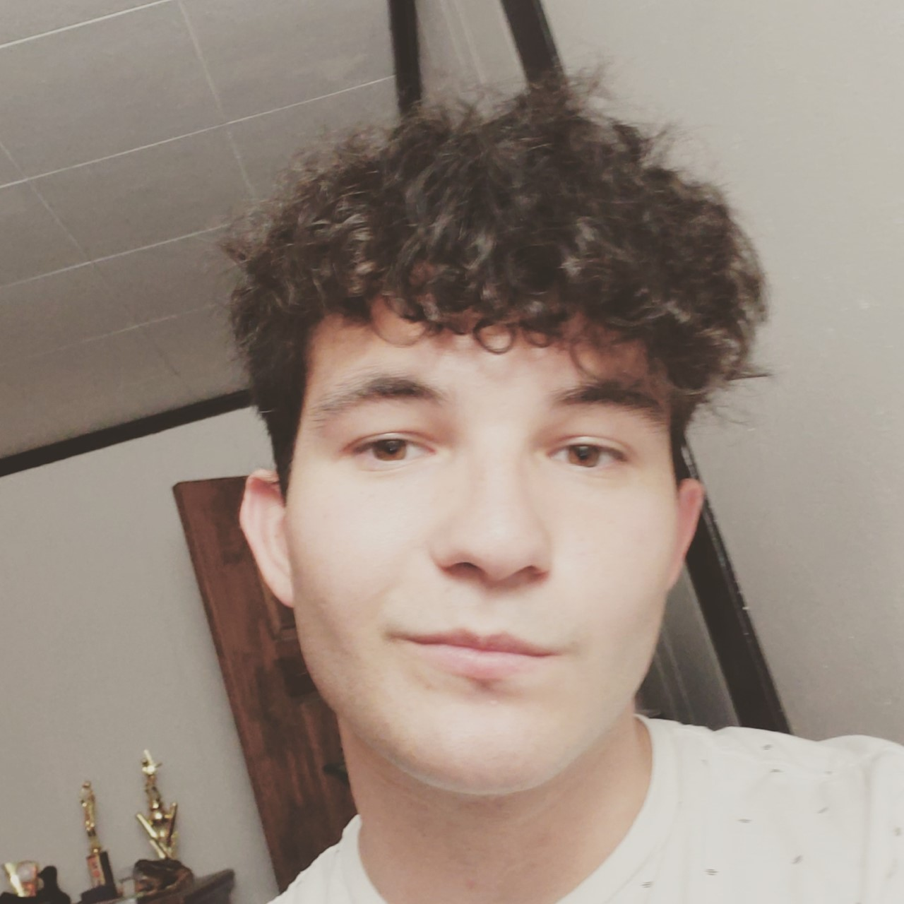

About
My name is Curtiss Davis and I am a Sophomore at Rose-Hulman Institute of Technology. In my time at Rose, I have learned how to code with Python, Java, Javascript, C, and some assembly code. My knowledge on this topics are not mastery level, but it does enable me to do mineal tasks that are assigned to me and have a quicker understanding of new material in those languages.
In my earlier stages of life, I went to Terre Haute South High School were I was apart of the Marching Band all four years. My senior year I even advanced to the role of Section Leader. This allowed me to get an understanding of how to lead a group of people and work with other people in power to make a plan for improvement. In regards to my sports life, I played Baseball from 1st grade until 8th grade, Basketball from 1st to 5th grade, and Track & Field the last two years of High School.